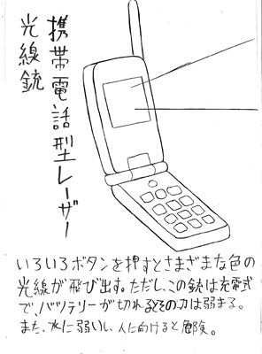
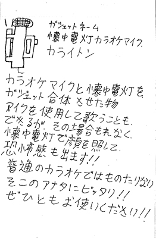
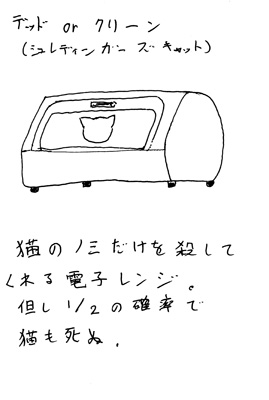
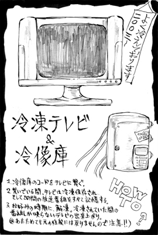
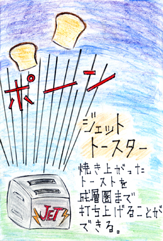

The Future gadget
来自未来的武器
～打磨后的睿智结晶，将成为圣战中的神之火。～
以下是迄今为止我们研究所发明的许多光荣的“未来小工具”。
也有邮购，请随时传真。如果不想卖完了之后后悔的话……买吧。
通販用ＦＡＸ番号 0C-3A66-1704
| 滋賀県・テクノポートさんの作品 |
携帯電話型レーザー光線銃 |
価格 未定 |
|  |
假装在玩手机，迅速排除背后的敌人……? !
问题是敌人从正面来的时候……。
|
|
| 大阪府・龍月海さんの作品 |
懐中電灯つきカラオケマイク“カライトン” |
価格 未定 |
|  |
带手电筒的卡拉ok麦克风
这个麦克风是单一方向性的吗!?
只要有这个，说不定就能找到那个“隐藏在黑暗中的人”……!
|
|
| 岩手県・金澤崇研究員作 |
デッドorクリーン |
価格 未定 |
|  |
薛定谔的猫
未来会是什么样的
这是由我们观测者决定的!
|
|
| 東京都・AiNO研究員作 |
冷冻电视&冰箱 |
価格 未定 |
|  |
在连接电线的时候，
把节目保存起来吗。アカシックレ
这是一个让人联想到电线的好主意! |
|
| 奈良県・逢原トワ研究員作 |
喷气机 |
価格 未定 |
|  |
嗯，读懂了!这或许这个面包
同时也是给外星人的信息
没错就是这么一回事!ベントラー！ |
|
| ８号 |
電話レンジ（仮） |
価格 未定 |
微波炉与手机合二为一，可以远程操作。回到家的时候已经加热完毕了!
※目前正在调整中。销售时期未定。 |
| ７号 |
攻殻機動迷彩ボール |
特価 80,000 円 |
擬似的に光学迷彩を体験できる巨大オブジェ。６型ブラウン管、計１２台を三次元的に組み合わせ、隙間を埋めるように超小型Ｃ－ＭＯＳカメラを複数装着した。カメラはちょうど、そのカメラと対応する球体裏側のモニタに対し直角且つ外側へ向けてある。これにより、このオブジェから死角は消え、オブジェの影に隠れても反対側からは丸見えなのだ！
※とても巨大です。家にじゅうぶんなスペースがある方のみご注文ください。壊れますので転がさないでください。 |
| ６号 |
サイリウム・セーバー |
特価 1,480 円 |
ケミカルタイプの赤いサイリウム。柄を取り付けたことにより、剣のようにも扱える。血糊を発光させるという画期的アイデアにより、リアルなチャンバラごっこが可能となった。
※狭い場所で振り回さないでください。血糊が飛び散り、周囲の人の迷惑となる恐れがあります。 |
| ５号 |
またつまらぬ物を繋げてしまったｂｙ五右衛門 |
特価 7,800 円 |
電気代不要のエコドライヤー。掃除機と合体させたことにより、その排気を利用してドライヤーを作動させるのだ。マッドだがエコ。矛盾をはらむ苦悩の発明品ここに爆誕。
※ドライヤーは熱風のみ使用できます。風量調整はできません。 |
| ４号 |
モアッド・スネーク |
特価 7,800 円 |
超瞬間加湿器。大量の水を、多数の電熱コイルで沸騰させ、ものすごい量の蒸気を噴出させる。これで乾燥した季節も恐るるに足らずだ。クレイモア地雷そっくりなので装飾品としても有用だ。
※適用畳数・６畳。本未来ガジェットは使い捨てとなっております。 |
| ３号 |
もしかしてオラオラですかーッ！？ |
特価 9,240 円 |
親指の汗のかき方によって判定するウソ発見器。我がラボの総力を結集した史上最高傑作である。あらゆる嘘もあらゆる陰謀も、これさえあれば見抜くことが可能だ。
※あくまで発汗を検知する装置であり、実際に嘘を見抜けるかどうかは保証できません。 |
| ２号 |
タケコプカメラー |
特価 5,480 円 |
竹とんぼ式のＣＣＤカメラ。日本の伝統工芸品と最新ＡＶ機器が融合したとき、過去と未来の垣根は消え、動力なしによる空中撮影という画期的機能が実現された。
※撮影された映像は激しく回転している状態ですが、故障等ではありません。この点についてはノークレームでお願いいたします。 |
s
| １号 |
ビット粒子砲 |
特価 1,098 円 |
おもちゃの光線銃の中にテレビのリモコンを埋め込んだもの。テレビに向けて引き金を引けば、さながら銃を撃つかのようにチャンネルを切り替えることができる。さあ、少年時代を思い出せ！
※対応しているボタンは『チャンネル送り』のみです。他のボタン（電源、音量調整等）は、テレビ本体から直接操作していただく必要があります。 |
bakc